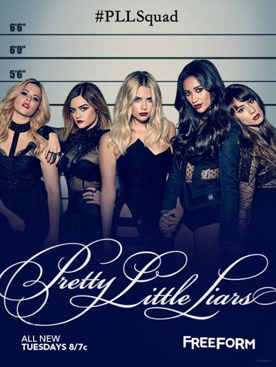

What to watch
These are the top five drama series to watch on Netflix according to popular vote.
Stranger Things
Mother Joyce Byers, loses her kid, Will, and she sets up an investigation with the police. Something mysterious is going and everyone ends up looking for Will including the government.

13 Reasons Why
Hannah Baker commits suicide and blames her high school peers for bullying her. Clay discovers tapes made by Hannah explaining her death.
Haunting of the Hill House
The Crain family moves into a haunted house.The family experiences mysterous things in the house and it ends up very traumatizing and it forces them to leave the house. Later on, they have to go back to end to face the tragedies that happened in that house.
Pretty Little Liars
Allison goes missing and her friends receive text messages from A who threatens and blackmails them. They have to through many challenges and work together to find out who A is.
Riverdale
Based on the Archie comics, Archie struggles to decide between football or music. Archie and Betty make new friends and they all help each other despite their social class status.